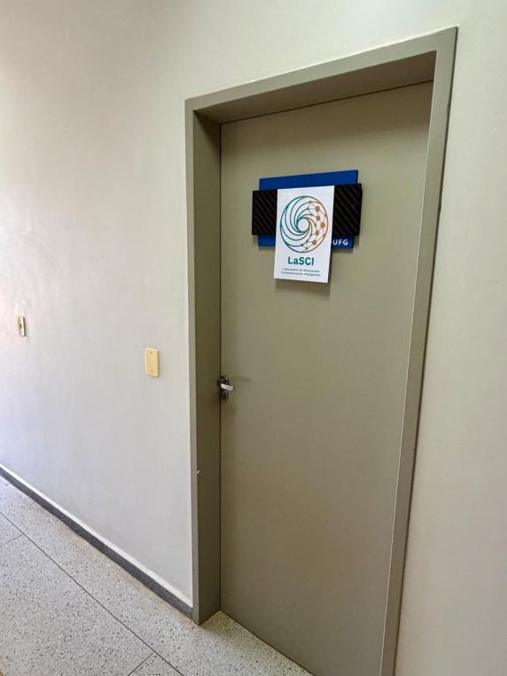
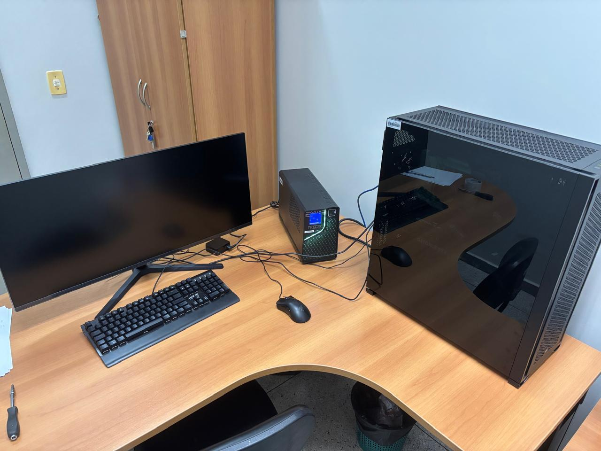
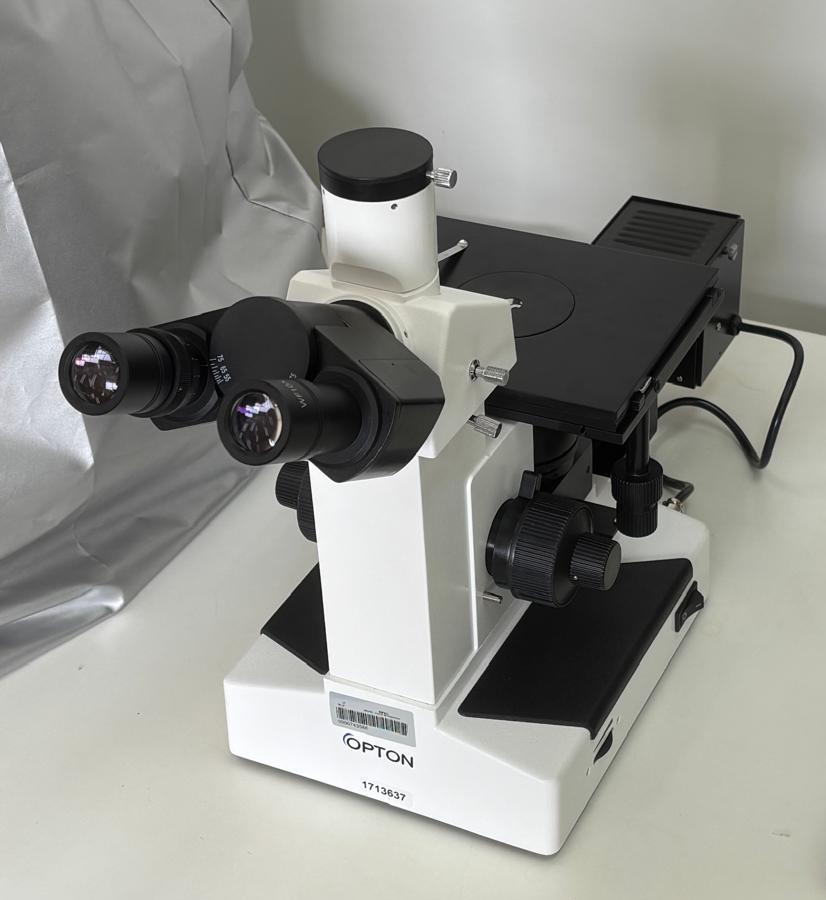

Infraestrutura
A infraestrutura do LaSCI combina recursos para simulação computacional e análise de materiais. A workstation de alto desempenho dá suporte às atividades de computação do laboratório, e o microscópio metalográfico permite observar materiais metálicos em detalhe.


